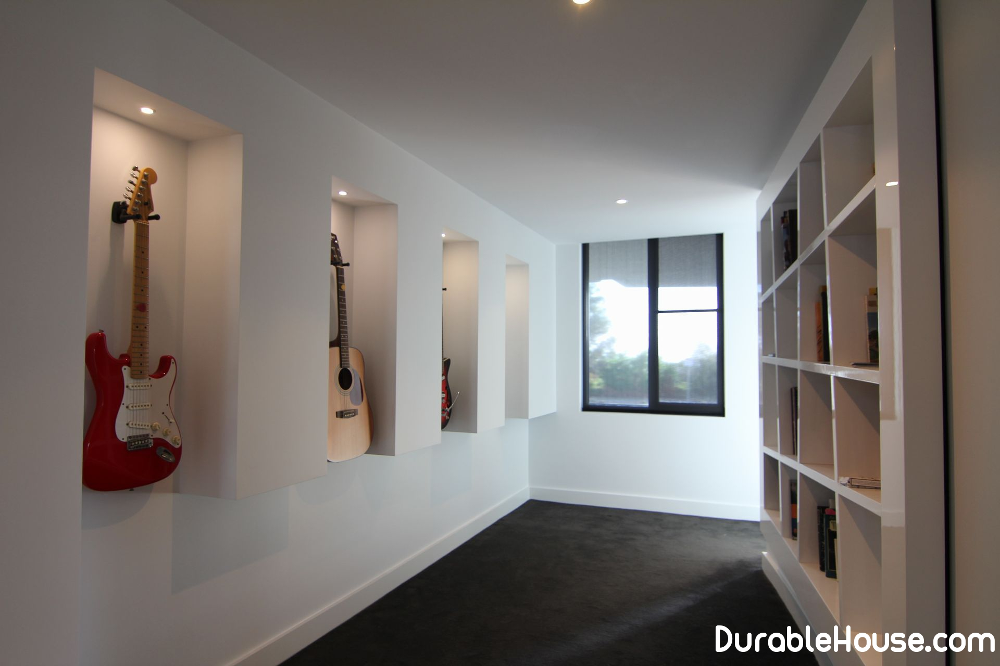

Walls decoration: plasterboard
Among those who are in the process of erecting a house already Got to the finishing works, there are always disputes about the methods of finishing the walls. Some mountains stand For oshtukaturivanie, others and do not want to hear about this rather dirty way, preferring Lay the walls and ceiling with plasterboard slabs. This dispute is endless and get involved in it it makes no sense. We decided to approach the problem impassively.
Since we have stopped in detail in one of the previous issues On the method of applying plaster, now more scrupulously talk about the installation of gypsum plasterboard Plates.
Consider the construction of walls and partitions of gypsum board, Technology of their erection and related materials. Considered walls and partitions A framework made of metal profiles lined with sheets of plasterboard (GKL), with Laid between them plates heat and sound insulation.
Plasterboard sheets
Plasterboard sheets (GCR), which can also be called Dry plaster or gypsum panels, is a building and finishing material for The implementation of internal partitions, suspended ceilings, wall cladding, etc. Special properties Gypsum boards, allowing them to bend them, giving a different configuration, give The ability to create curvilinear surfaces.
The gypsum board consists of a gypsum core, Faced with cardboard on both sides. For the production of the core, gypsum is used, Has the necessary qualities for use in construction. Carried out on his The leaf has the property of absorbing excess moisture from the environment, and Change the conditions - on the contrary, allocate it. It can be said that the gypsum board has Ability to "breathe."
To increase the density and strength of the gypsum core in it Add special components, and the surfaces are covered with facing cardboard. Clutch Cardboard with gypsum core mass is carried out with the help of adhesive additives. Cardboard It serves as a reinforcing frame of plasterboard sheet, being the basis for subsequent Finishing works. In addition, it has all the necessary for use in residential Hygiene and environmental quality.
Two kinds of edges are distinguished in gypsum boards, and In both cases thinning begins at a distance of 50 mm from the longitudinal end with The front side. But if in one case the longitudinal edge has a rectilinear shape - "UK", then in another it is somewhat rounded from the front side - "PUK". Rounded Edge allows you to seal joints between sheets without using a special reinforcing Tapes, only with the help of putty. Type of sheet with straight edges - "PC" - is used in Mainly to perform internal layers or to fill the cavities of the partitions. For The device of seams in places of joints GKL with direct edges from their end is necessary Remove the bevel at an angle of 45 degrees with a thickness of one-third of the sheet.
Pile-gouging plates
Pazo-crest plates are made in the form of a rectangular Parallelepiped. The docking and supporting surfaces have on either side a groove or crest. Modern technologies allow you to obtain plates with excellent quality of facial Surfaces. Drywall is available in several modifications that match Different operating conditions. For rooms with high humidity used Moisture resistant plasterboard sheets. The layers of cardboard in them are subjected to special treatment Antiseptics (to prevent the formation of mold and fungi) and waterproofing Compositions. In rooms where there is a risk of fire, it is necessary to apply Fireproof plasterboard. For its manufacture, special additives are used that increase Fire resistance of the material. In addition, gypsum plasterboards are produced Fire resistance and various types of combined panels.
Metal frame
The constructive basis of interior partitions is Hard metal frame. It is assembled from steel profiles of several types, which Have different functional loads. Profiles are made of steel tape Thickness of 0.55-0.8 mm by the method of cold rolling.
To protect against possible exposure to aggressive media The metal profiles are galvanized. In normal air environment, galvanized The surface of the profile forms a layer of zinc carbon dioxide, which prevents further Oxidation of the material. Effective protective coating is obtained as a result of lasting Adhesion of steel and outer layer of zinc. When the profiles are shortened, the cuts do not require Additional anticorrosion treatment.
During the operation of the structure of metal Profiles must withstand loads of their own weight, facing gypsum plasterboard Panels, additional finishes and possible hinged elements. To do this on the planes Profiles are made of stiffeners - longitudinal corrugations.
Rack profiles
There are several kinds of profiles that have different Function. First of all, these are rack-mountable profiles. These profiles have a section in the form of a channel. They are used as vertical racks of the frame to anchor them Gypsum boards.
The profile flanges along the entire length have longitudinal grooves. Total There are three such grooves, while the middle indicates the joint of the gypsum boards, and two The lateral centers screw screws. In the backs of the profiles there are special The holes necessary for the laying of utility lines inside the wall or partitions. These holes (usually paired) are located near the ends of the profiles and have a diameter of 33 Mm.The rack profiles are installed in the guide profiles. For their fastening, screws are used or the method of cutting with bending is used. Installation Gypsum boards on the rack profiles is carried out in the direction of the open part Profile. Screws are first screwed into the profile shelf near the backrest and only then - at Opposite edge. In the reverse order, the profile shelf can bend inwards. For Correct choice of the size of the profile, it is necessary to take into account the planned height of the partition, its Structural features (single-layer or double-layer lining), as well as sound- and Heat insulation requirements.
Guiding Profiles
Another element of the metal framework is Guide profiles. They also have a cross-section in the form of a channel and are used in the role Guide the basis for the racks. In addition, these profiles can be used for Making jumpers between the rack profiles. This is necessary, for example, for installation in a Partitions of door frames.
The backs of the guide profiles have holes of 8 mm in diameter For the installation of dowels, with which the profiles are attached to the supporting base. If necessary Additional holes are drilled in place. The width of the profile shelf is 40 mm, Which makes it possible to fasten gipsokartonnyh sheets directly to it.
Angle profiles
The most vulnerable parts of the partitions are the outer corner joints. For the construction of such joints, gypsum panels with straight edges are used. However, in In this case, the probability of mechanical damage to the corners of the partitions in the process Operation. To avoid this, angular profiles are used.
The angle between the shelves is 85 degrees, which provides it Dense contiguity to the right corner of the septum. Element shelves are perforated with holes With a diameter of 5 mm. During installation, these holes are filled with putty, which is applied On the surface of the profiles. This achieves the necessary cohesion between the metallic Profile and drywall sheet.
When doing curvilinear surfaces from gypsum panels Arch arrays are used. They are made of ceiling profiles. Radius of bending Varies (but not less than 500 mm).
Insulation material
As a heat and sound insulating material in Styrofoam is provided for complete systems (although it is permissible to use Mineral wool and the like slabs). This material is made from a suspension Foaming polystyrene and is a rigid foamed thermoplastic consisting From fused pellets. The structure of the granules is formed by microscopic pores filled with Air. Styrofoam is almost 98% of air and only 2% is Itself plastic. It is this that causes high heat and sound insulation properties Material.
In addition to low thermal conductivity, expanded polystyrene has Stable structure over a wide temperature range. It well resists the impact Various chemicals, both alkaline and slightly acidic. Expanded polystyrene does not create Nutrient medium for fungi and mold. Among the advantages of expanded polystyrene Include durability and environmental friendliness.
The disadvantage of expanded polystyrene is its combustibility. For Reduce the fire hazard in the described material, add fire retardant. Expanded polystyrene foam is embedded in the internal space of the wall or partitions. how Normally, plates with a thickness of 40 mm are used, with between them and the facing sheets Leave a small gap. Plates are cut with a knife or saw in accordance with the necessary Dimensions. They are fastened by wall anchors with a pitch of 400-450 mm in the vertical and 900 mm in Horizontal (for the same purpose, the use of glue is allowed).
Related Materials
Among the operations performed when building walls and partitions, It is necessary to distinguish the sealing of seams in places where the sheets of plasterboard meet. In technology "Dry" construction is, perhaps, the only "wet" process, which involves Use of aqueous solutions.
The seams between the slabs can be sealed with Using or without reinforcing tape.
In the first case, putty is applied for seams on gypsum Basis. At the joint of the panels with thin edges, a layer of putty is applied, then The reinforcing tape is laid on it and one more putty layer is applied. In addition, this material is used to repair all kinds of surface defects Gypsum boards.
It should be noted that the materials used to perform Facings from gypsum boards, have in their composition gypsum. To such materials Applies and gypsum mounting glue. It is used for gluing gypsum panels and plates Isolation. In addition, there are several dozens of other related names Materials (putties, adhesives, joint fillers, etc.) for construction Works.
Among those who are in the process of erecting a house already Got to the finishing works, there are always disputes about the methods of finishing the walls. Some mountains stand For oshtukaturivanie, others and do not want to hear about this rather dirty way, preferring Lay the walls and ceiling with plasterboard slabs. This dispute is endless and get involved in it it makes no sense. We decided to approach the problem impassively.
Mounting GKL partitions
There are two main options for using drywall For the erection of walls and the installation of interior partitions. First, it is the fulfillment of Partitions of the goal-com from the GKL (Figure 9). Secondly, facing of brick, concrete or other walls Gipsokartonnymi sheets on metal profiles (Figure 10).
Partitions completely made according to what we describe Technology, have not many modifications. Metal profiles can be mounted In a single or double frame, as well as in a double frame with internal space For the laying of various engineering communications. In addition, there is a variety Partitions with a wooden frame lined with plasterboard sheets.
The metal frame can be lined with GCR in one or two Layer. As a rule, facing in one layer is made on a single metal or Wooden frame. Lining in two layers can be performed both on single and on Double metal or wooden frames.
The weight of one square meter of the wall is approximately 25 kg when Facing in one layer, and twice as much if plastered with plasterboard sheets Is produced in two layers. The maximum height of the partition can range from 4 to 6.5 m Depending on its design. The larger the cross-section of the applied racks And the smaller their pitch, the higher the height you can build partitions.
It should be noted that the double metal frame with Internal space for engineering communications implies a lower permissible The height of the walls, rather than the usual double skeleton.
This is because the first case uses Rack profiles with a smaller overall cross-section, since part of the space occupy Cavity for communication. When the partition is made of elements of the Knauf system, Double-sided lining of the frame with plasterboard panels.
In addition, it is possible to use metal profiles and Gipsokartonnyh sheets for facing already existing or newly built from other Materials of walls and partitions. For such cases, there are several constructive Solutions.
First of all, you can simply paste gypsum cardboard sheets or Gypsum composite (with insulating material) panels directly to the base wall. In this case, the maximum height of the lining is determined by the height of the drywall sheet or Combined panel.
Performing a metal frame on the base wall has Several features. The guiding and racking profiles are fastened to a frame with the Calculation that between it and the wall there should be a space of 60-100 mm for laying Engineering communications.
The height of this cladding can reach 4-4.25 m. At the same time It is possible to use mounting brackets. Brackets are mounted to the base wall with Vertical step of 1,5-2 m, and to them are attached racking profiles, which allows to increase The maximum height of the lining up to 7 m.
The metal frame for gypsum paneling can Be assembled from special profiles (ceiling profile PP 60/27) and direct hangers. Direct suspension is a metal element consisting of a backrest that is attached to Wall or ceiling, and perforated shelves.
Suspensions are attached to the base wall in 1.5 m steps vertically. On They are mounted special profiles, to which the plasterboard sheathing is attached. The distance between the rack or special profiles is determined by the width of the gypsum board Sheet.
Mounting of metal structures
Mount the walls and partitions after the end of all Construction works associated with the use of liquid solutions, but before the implementation of clean floors. Consider the sequence of operations.
First of all, you need to mark up the Partitions. First it is performed on the floor (you can use a cord Device). Then, with a plumb line, this markup is transferred to the ceiling. On Directing and pristenestechnye profiles glued elastic soundproofing Tape.
The guide profiles, according to the marking, are fastened with dowels with Step one meter to the floor and ceiling (Figure 11). In the same way, the wall mount Profiles. The other racking profiles are cut, based on the height of the room, with the tolerance (in Side reduction) no more than 10 mm.
Next, the rack profiles are set in increments of 600 mm in Upper and lower guides and fixed by the method of punching or screws (Figure 12). If necessary, the rack profiles can be lapped together (for PS 50 - 0,5 m, for the SS 75 - 0,75 m, for the SS 100 - 1 m).
Skeleton Skinning
After assembling the metal frame, you can proceed to its Sheathing. First of all, on a flat surface with a special cutter or sharp A sharpened knife must be cut gipsokartonnye sheets in accordance with the height Partitions. First, the outer layer of cardboard is cut and gypsum is cut Core.
Then the sheet is placed on the edge of the table, the gypsum core Breaks, and a layer of cardboard on the reverse side is also cut. The resulting The edge is processed by a plane. Sealing of joints at the joints of sheets can be performed with Using or without reinforcing tape. Accordingly, the methods of processing differ Edges.
If reinforcing tape is used, it is necessary to remove the plane At the edge of the GCR, a facet at an angle of 45 degrees to one third of the thickness of the sheet (Figure 13-a). Layer Cardboard in the place of laying reinforcing tape is removed, the edges of the cardboard are sanded. If The seam is performed without the use of reinforcing tape, the chamfer is removed at an angle of 22.5 degrees Two-thirds of the thickness of the sheet, the edges of the cardboard are also sanded (Figure 13-b).
After preparing the GCR, you can start installing them Directly on the metal frame. Plasterboard sheets are installed Vertically and fixed on the frame by screws with a pitch of 250 mm, with the upper edges Tightly pressed against the ceiling. The fixing is made from the corner, by two mutually Perpendicular to each other.
Above and below the gypsum panels are attached directly to the Guide profiles at a distance of at least 10 mm from the edge (if the edge is not Faced with cardboard, the distance should be increased to 15 mm). Location of the self-tapping screw Is determined by the longitudinal grooves on the rack of the racks.
When using self-tapping screws and electric drills with special Nozzle or screwdriver pre-drilling holes is not required. During It is necessary to ensure that the screws are screwed into the plasterboard sheets At a right angle and went into the depth of the profile no less than 10 mm.
The heads of self-tapping screws should be pushed into the thickness of the GCR to a depth not Less than 1 mm and plastering. If the screw is defective, or it is incorrectly placed, it should be Remove, then put a new one at a distance of about 50 mm from the old one.
In those cases where the cavity of the partition is stacked Sound- or heat-insulating material (expanded polystyrene or mineral wool), it is necessary To provide their reliable fastening. This can be done with the help of plasterboard inserts Or fragments of the rack section of a smaller cross-section (Figure 14).
After fixing sheets of plasterboard on a metal frame You can start sealing joints in the joints.
Stacking reinforcing tape
Gypsum boards used for facing have Delicate edges for the formation of seams. A spatula on the joint is applied a layer of putty. Further One movement from the top down the putty putty is leveled, and its excess is removed. Then, without waiting for solidification, the reinforcing tape is laid on the putty, while With a spatula it is pressed into the putty.
Another wider spatula on the reinforcing tape is applied one more Layer of putty, which is called the covering or leveling (Figure 16). Drying seam Is subjected to further processing using a grout or sandpaper, While avoiding damage to the linerboard.
Machining the skin in two layers of GCR with straight edges
When the skin is made in two layers, the inner one can be Perform from gypsum panels with straight edges. In this case, the edges Are treated in the same way, and for the implementation of the seam is applied more than Usually, the covering layer of putty. This is due to the fact that when using Reinforcing tape, with reference to GCR without fine edges, it is possible to form a small Convexity.
Editing outer corners
If there are corners in the partition, Profiles. They are installed on a pre-laid layer of putty and from above Cover with another layer (Figure 18). Internal corners are treated with putty and Are formed by a reinforcing ribbon bent at right angles.
Doorway device
When doing partitions on the system we are considering Often requires the installation of doorways. In this case, the side support racks Profiles are installed, based on the width of the door frame. Top mounted Additional guide profile (open part up). Further, between the upper and An additional guide profile is used to install a section of the Which will be located joint gypsum panels (Figure 19).
If two-layer cladding is done, then additional There are also two racking profiles above the door frame. In this case The inner layer of the cladding is fixed to one rack profile, and the outer one to the other. Inside the sides adjacent to the door frame of the racks are placed wooden bars. Directly to these bars fasten the structural elements of the door frame.
In addition to the above, it is necessary to note more Several important points. Sometimes there may be a situation in which Perform horizontal joints between the GCR. In this case, the gypsum panels should be fixed And, under the junctions formed, Guide profiles. If a two-layer liner is produced, internal and external seams are not Must match.
Seams of the inner layer can be formed without using Reinforcing tape, only with putty. Distance between internal core screws Facing can be increased to 750 mm.
In cases where partitions are installed in the Rooms with high humidity, for facing should be used moisture-proof Gypsum panels. If using conventional sheets, a further Tiling, places of possible exposure to the surface of GCR moisture should be Subject to additional waterproofing. Electrical and other communications should Place in such a way as to exclude the possibility of their being damaged by the edges of the profiles or The edges of the screws.
Curved surfaces device
One of the most outstanding qualities of gipsokartonnyh sheets - Their ductility in the wet state. This makes it possible to perform curvilinear Surface, and through this solve a variety of architectural problems.
A GCR with a width of 600 mm is used for such works. Minimum The radius of bending depends on the thickness of the sheet. At a thickness of 12.5 mm, the bend radius is not Less than 1000 mm, with a thickness of 9 mm - 500 mm, if the sheet has a thickness of 6.5 mm, The minimum bend radius is 300 mm. It can be seen that with decreasing Thickness of the drywall sheet, the possible bend radius is also reduced.
For the installation of curved GCR special profiles are used PP 60/27 or guide profiles specially prepared. The simplest application example Such sheets are rounded corners. The main difference in technology Installation of such structural elements is the transverse arrangement of gypsum panels to Relation to the rack profiles.
Consider the order of the rounded corner. Before In all, it is necessary to make a template, which is used to bend the GCR (Figure 20). Of Two side elements of the necessary radius are cut out of the gypsum board (it should be slightly Less than the bending radius of the GCR).
From the same gypsum board, spacer plates are produced which Determine the total width of the template. This width should also be slightly less than the width GKL. Further, with the help of wooden blocks and screws, the template is assembled and fastened together. Him It is necessary to equip with clamps for fixing the end edges of the bent sheet (for this purpose Used to trim metal profiles).
On the one hand Gypsum board is rolled with a needle roller.
This side will later be deformed. For Convex forms it will be internal, for concave - external. Next leaf pinned The side up is laid on the gaskets and wetted with water, while avoiding Water on the unpainted side of the leaf. If this happens, a rupture of gypsum Panels during bending.
Humidification is performed until the gypsum core is saturated (this Can be determined by stopping water absorption). The workpiece is placed on the template, with In this case, its center must coincide with the axis of the template. Next, the sheet bends along the intended radius And fixed in clamps. GCR is fixed by means of an adhesive tape, then it is removed from Template and set to dry. The following sheets are processed in the same way.
Installing the Curved Section of the Partition
After manufacturing the required number of bent elements The installation of the curved part of the partition begins. To do this on the floor and ceiling A marking is made for the installation of guide profiles, which are preliminary Are subject to special training. Namely: with the help of scissors on metal external The shelf and backrest are cut to the inner shelf, and the incisions should be made Parallel to each other.